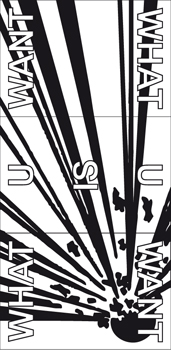
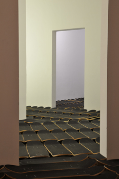

BARKING DOGS UNITED
----------------------------------------------------------------------------------------------------------------------------
NEWS ABOUT PROJECTS TEXT LINKS CONTACT
| Artist
Duo BARKING DOGS UNITED ---------------------------------------------------------------------------------------------------------------------------- NEWS ABOUT PROJECTS TEXT LINKS CONTACT |
| Please
select a project: 2008 What We Is Want What You Want SIZE MATTERZ 2007 Bis Auf Weiteres... 2006 On A Spaceship With No Fuel And No Future Carwash iForgive / iForget 2005 The Wild Bunch |
 "Barking Dogs United: SIZE MATTERZ" Solo exhibition, 2008 19.01.08 - 16.03.08, ACC Galerie Weimar, Germany. An exhibition of the ACC Gallery Weimar in cooperation with Kerstin Stakemeier (Hamburg). Sponsored by the Stiftung Kunstfonds, the Thuringian Ministry of Culture, and the City of Weimar. With support from the Sponsor Circle of the ACC Gallery Weimar. An eight-point introduction. Opening speech by Kerstin Stakemeier. 1 Barking dogs don’t bite! But: Like with the proverbial dogs, it’s not the individual dog’s fault that he can’t bite when he’s barking, but the fault of the species, his development. In the case of Barking Dogs United, it is art that can only symbolically bark and not politically bite. 2 So why is the position of art in society directed toward passivity, toward representative criticism? Why can’t it bite, even when the individual artist is in a mood for attacking? And why is art in the present – like the six-headed dog, the corporate identity of Barking Dogs United – incapable of movement, but loud? 3 Boris Arvatov, productivist art theorist of the Russian October Revolution in 1917, gave an answer to this question in 1920 that is just as simple as it is illuminating: “Middle-class art produces only representations of the world – but never the world!” 4 Up to our own time, this has changed little. Art has remained bourgeois. However, with the art market that has been expanding for years and the resulting immense increase in value of contemporary art, it seems that our relation to it has changed. Art has gained in security – but lost in distance. Its autonomy, which had never been more than its position among the bourgeois aesthetes, has gone from being a privilege to a duty. In the present day, the barking must intensify to the point of possibly negating art altogether in order to continue seriously attacking its own contemplative position. 5 Contemporary art has become a societal fashion accessory. Who needs a world consciousness anyway when he has got art consciousness? For many reasons, it has grown into a more and more central spectacle in society: more and more art fairs, private collector museums, mega-exhibitions, the economizing of art universities and museums. Art as a commodity has become art as a money investment. This does not make it morally reprehensible – but simply unimportant from the standpoint of criticism. 6 Barking Dogs United urges for this investment to be poorly invested: as an economy of consumption. In the Jena Real Philosophy, Hegel wrote, among other things, that the economy at the moment has embarked upon a productive, stabilizing path for society, in which its production is no longer driven by desire, by the consumption of objects, but by its constant reproduction. Economy begins to support the state when it ensures the nation’s reproduction. 7 In SIZE MATTERZ, this principle is ostensibly reversed: SIZE MATTERZ does not produce, but rather consumes, so that – as we can read in the manifesto’s conclusion – artists become non-artists. And in order to make artists into non-artists, it is not necessary to introduce everyday objects into art, which only makes the price of the objects higher and leads to the sort of scandals that were so frequent in the last hundred years; instead, art must begin from everyday objects and draw its basis from them. 8 Barking Dogs United begin with the part of commodity production that is just as superfluous as art itself seems to be: skateboards, (drag) shows, Western clichés, religious relics – parts of everyday culture. They take apart the present into its individual components and affirm not their societal mediation, but their objects. Barking Dogs United do not embrace mass culture in order to modernize high culture, and do not embrace high culture in order to separate themselves from mass culture, but rather create solidarity with useless hedonistic individual components that promise neither product value nor increased prominence. Barking Dogs United bark, since in art, there is no reason to bite: non-art is everywhere in society. We only need to lead it to art.  GPS Navigator, 2008. Object (150x100x30cm), built-in screen with animation. A virtual navigation through the exhibition via GPS. 4’00 Min.  Wir müssen draußen bleiben (Benedikt Braun), 2008. Two barking megaphones.  Corporate Identity Room, 2008. With BDU-Manifest, BDU-Emblem und BDU-Mascot (in the showcase).  BDU-Mascot, 2008. Objekt (12x6x4,5cm).  BDU featuring Roger Behrens On a Spaceship With no Fuel and no Future, 2006. Barking Dogs United interview Roger Behrens about pop music, art, and social affairs. Radio Feature, 105 Min. Headphones installation along a gallery corridor. Skatefloor, 2008. Floor installation containing 1.300 Skateboards.  BDU Skateboards - Multiples, 2008.  FX (Teile 1, 2 und 3), 2008. What U Want Is What U Want, 2008. Skatefloor, 2008. (Exhibition view)  FX (Teile 1, 2 und 3), 2008. Schemes, Light-boxes with digital prints, DIN A0. Schemes of guitar effect pedals manipulated to personal preference effect devices.  What U Want Is What U Want, 2008. Computer collage, three light-boxes with digitalprints (each 63x43cm).  Three way plug, 2008. Object (250x70x60cm). Skatefloor, 2008. Floor installation containing 1300 skateboards. Pistol (Toy model), 2008. Object (230x170x35cm). Skatefloor, 2008. Floor installation containing 1300 skateboards. The Pistol is installed in a room, facing the wall. Walking inside the exhibition space, one sees first a hole in the wall, unaware of it being the barrel of a gun, where a bullit is situated as well. Dual-not-duel, 2008. Video, 12’50 Min. In two separated rooms, projected on back-to-back walls, you see Nikos shooting Naomi and Naomi shooting Nikos in human size. In both cases the image of the one is blending into the image of the other. Neon Tetra, 2008. Screenshot, Video of a flickering neon lamp.  Skatefloor, 2008. Floor installation containing 1300 skateboards. Henrietta, Feuerzeug nach Helmut Newtons „Big Nude III“, 2008. Object (220x70x30cm). Skatefloor, 2008. Floor installation containing 1300 skateboards. Kitchenwars, 2008. Video, 1’45 Min. Two gas stoves fighting. Each fight ends up with explosion.  What U Want Is What U Want, 2008. Two Banana Men, 2008. Girl with Toilet, 2008. Anal-log, 2008. Skatefloor, 2008. (Exhibition view) Two Banana Men, 2008. Computer collage, light-box with digital print, DIN A0. Girl with Toilet, 2008. Computer collage, light-box with digital print, DIN A0.  Anal-log, 2008. Computer collage, light-box with digital print, DIN A0.  Girls on CMYK, 2008. Video, 3’30 Min. Edited video footage taken from television, shows a drag-queen song and outfit contest. The footage images fade in and out of CMYK colours. IN DOG WE TRUST, 2008. Ornamental Capital, 2008. Discokreuz, 2008. Skatefloor, 2008. (Exhibition view) IN DOG WE TRUST, 2008. Computer collage, light-box with digital print, DIN A0. The image is made out of circulating international currency symbols.  Ornamental Capital, 2008. Computer collage, light-box with digital print, DIN A0.  Disco-cross, 2008. Objekt (240x125x25cm), rotating. Skatefloor, 2008. Floor installation containing 1300 skateboards.  Barking Dogs United Manifesto.  Barking Dogs United: SIZE MATTERZ, ACC Galerie Weimar Floorplan/Set up. All content copyright 2008 Barking Dogs United (Nikos Arvanitis, Naomi Teraza Salmon) - all rights reserved. |